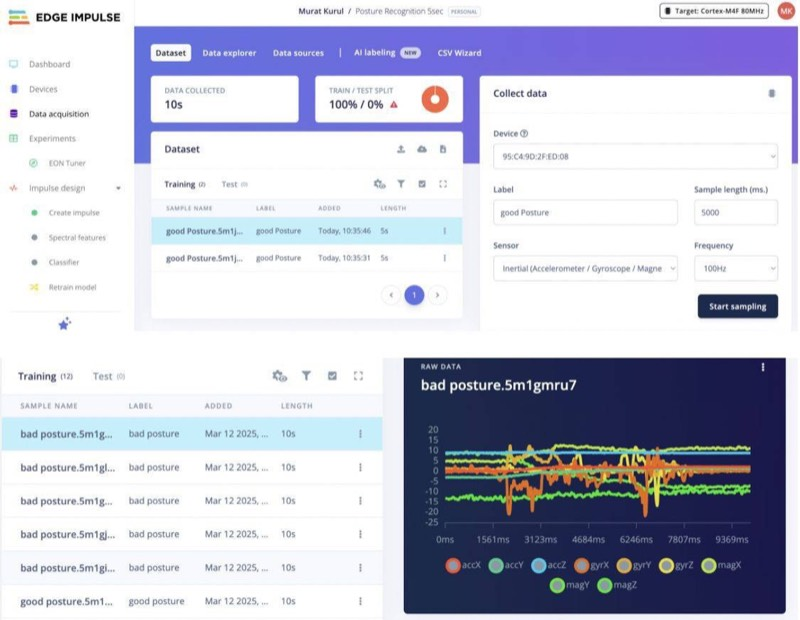
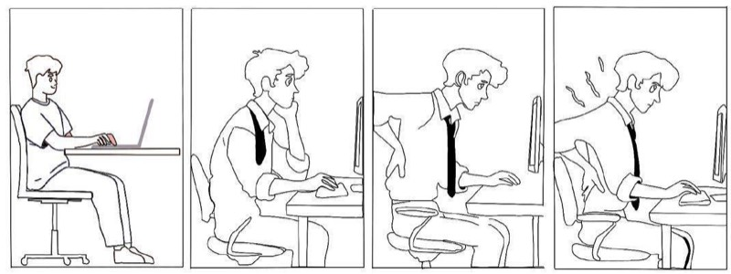
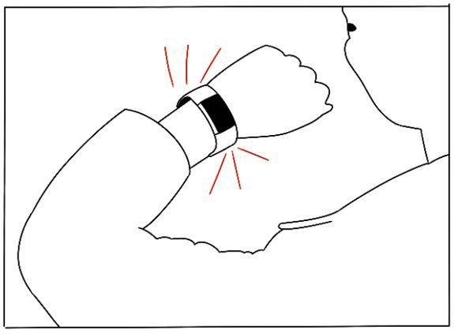
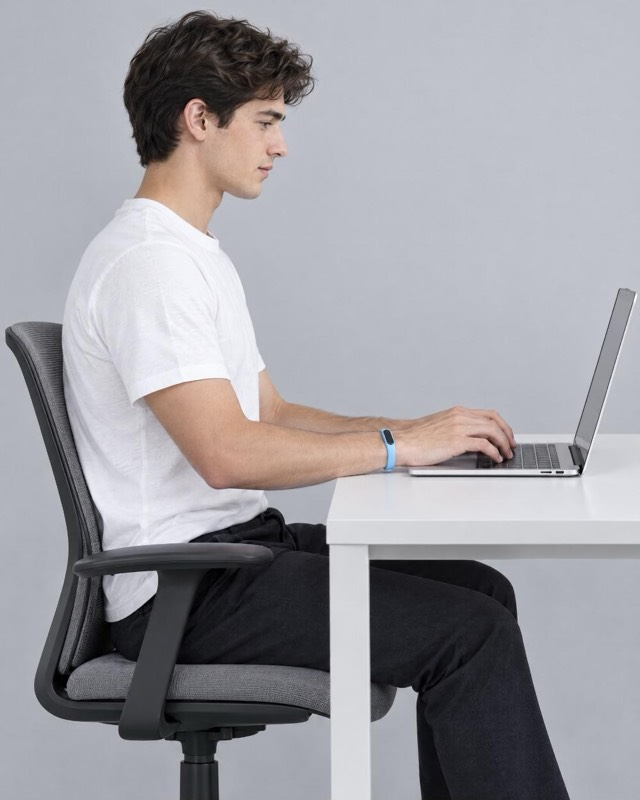
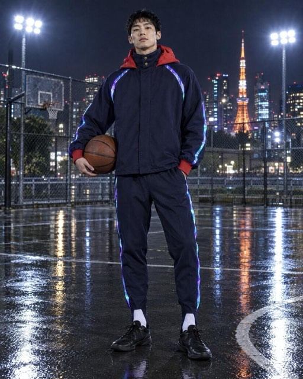

04 / 06PosturaInteractive prototype · Wearable tech · 4 weeks2024
Postura
A wristband that notices the slouch before you do.
An Arduino-programmed wristband that learns the difference between good and poor posture from motion data, then vibrates to nudge you upright before the slouch becomes a habit.
- My role
- Built the Arduino wearable, trained the classifier, product design
- Duration
- 4 weeks
- Year
- 2024
- Tools
- SolidWorks, KeyShot, Procreate, Arduino, Edge Impulse

01How it works
It learns your slouch.
- 01 · Collect
- Motion data from the accelerometer, gyroscope and magnetometer, labelled good or bad posture.
- 02 · Train
- A classifier built in Edge Impulse and run on the Arduino itself.
- 03 · Nudge
- When it detects a slouch, the band vibrates. No app needed.

02Storyboard
Slouch, buzz, sit back up.
The user slowly slouches while working. Postura buzzes on the wrist, and they sit back up before the posture settles into a habit.



03In use
Small enough to forget it’s there.
A slim band with a single module, worn all day at the desk. It only speaks up when your posture drops.


All work